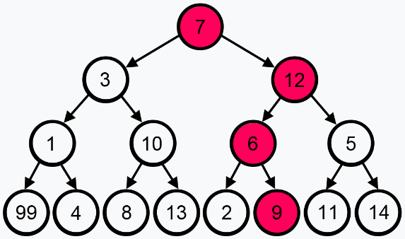

Learn Algorithms - The fun way!
Games
Santa's smelly socks
A pair of dirty socks have accidently been wrapped in one of the presents that Santa is about to deliver, you need to figure out which one to avoid a child getting a nasty surprise. You will get a prompt after every guess to help you find the smeling sock. Keep refreshing and playing with a new set of socks!
PlayN Queens Problem

You must place N chess queens on an NxN chessboard such that no two queens attack each other. Keep refreshing to get a new N!
PlayThree Partition Problem
The goal is to partition the given numbers into three sets, such that, the sum of numbers in each set is equal
PlayAlgorithms
Backtracking
The Backtracking algorithm helps to solve problems in a recursive fashion by building a solution one peice at a time, removing all the solutions that do not satisy the given condition at every step. It uses the brute force approach. The term backtracking literally means that if the current solution is not accurate then 'backtrack' and move on to finding other solutions.
Learn MoreBranch and Bound Algorithm
Branch and bound is an algorithm design paradigm which is generally used for solving combinatorial optimization problems. These problems are typically exponential in terms of time complexity and may require exploring all possible permutations in worst case. The Branch and Bound Algorithm technique solves these problems relatively quickly. ,
Learn MoreBitwise Algorithms
The Bitwise Algorithms are used to perform operations at bit-level or to manipulate bits in different ways. The bitwise operations are found to be much faster and are some times used to improve the efficiency of a program. To Learn more about these algorithms, click on the button below.
Learn moreGreedy Algorithm
The greedy algorithm, makes an optimal choice at every step in order to find the optimal solution ot the entire problem. As the name suggests, 'greedy' choooses the next piece depending upon which offers the most obvious and immediate benifits.
Learn moreSearching Algorithms

Searching Algorithms are designed to check for an element or retrieve an element from any data structure where it is stored. Based on the type of search operation, these algorithms are generally classified into two categories: Sequential and Interval. Click on the button below to know more about the different types of searching algorithms.
Learn moreDynamic Algorithm

Dynamic Programming is mainly an optimization over plain recursion. Wherever we see a recursive solution that has repeated calls for same inputs, we can optimize it using Dynamic Programming. The idea is to simply store the results of subproblems, so that we do not have to re-compute them when needed later. This simple optimization reduces time complexities from exponential to polynomial.
Learn moreSorting Algorithms

A Sorting Algorithm is used to rearrange a given array or list elements according to a comparison operator on the elements. The comparison operator is used to decide the new order of element in the respective data structure. To Learn in detail about the various sorting algorithms, click on the button below.
Learn morePattern Searching

The Pattern Searching algorithms are sometimes also referred to as String Searching Algorithms and are considered as a part of the String algorithms. These algorithms are useful in the case of searching a string within another string. To Learn in detail about the various pattern searching algorithms, click on the button below.
Learn moreDivide and Conquer
In divide and conquer approach, the problem in hand, is divided into smaller sub-problems and then each problem is solved independently. When we keep on dividing the subproblems into even smaller sub-problems, we may eventually reach a stage where no more division is possible. Those "atomic" smallest possible sub-problem (fractions) are solved. The solution of all sub-problems is finally merged in order to obtain the solution of an original problem.
Learn moreRandomized Algorithm

An algorithm that uses random numbers to decide what to do next anywhere in its logic is called a Randomized Algorithm. For example, in Randomized Quick Sort, we use a random number to pick the next pivot (or we randomly shuffle the array). And in Karger’s algorithm, we randomly pick an edge. To Learn more about these algorithms, click on the button below.
Learn more